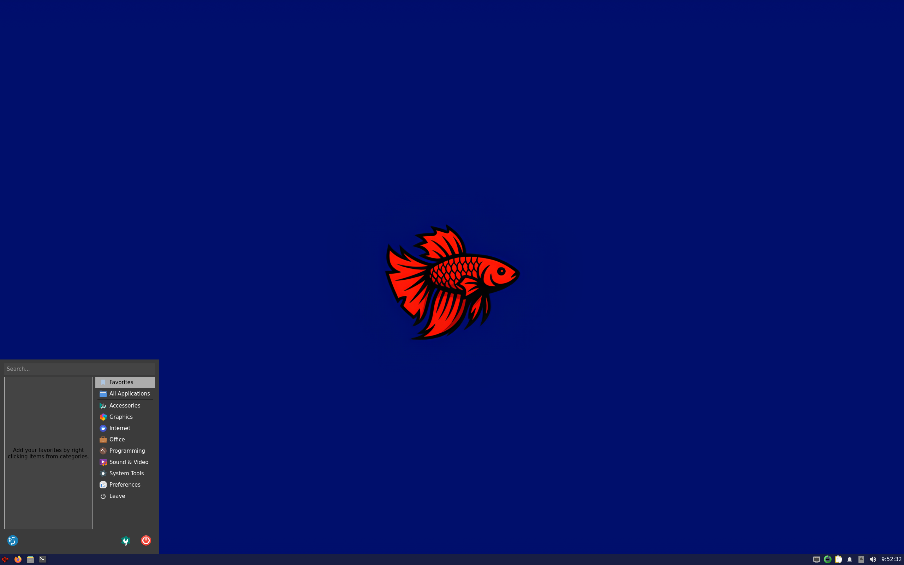
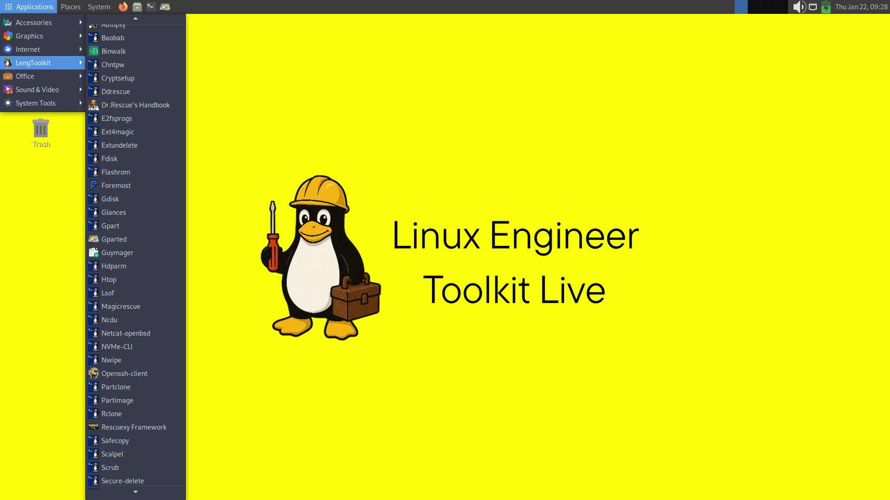
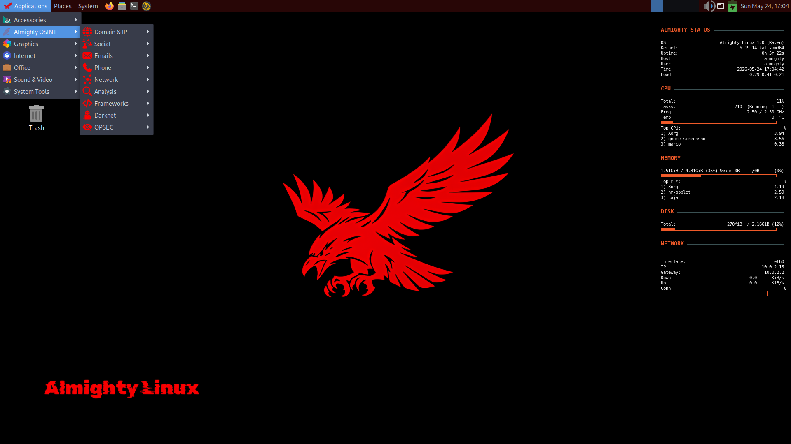

Linux Distributions
Each distribution is built for a specific purpose, from everyday computing to security hardening and engineering toolkits.

Zenclora OS
DesktopZenclora is a Debian-based desktop Linux distribution optimized for stability and daily use. Zenclora offers simplified package and system management commands to make Linux usage easier; it avoids unnecessary complexity while providing control to the user. From browsing the web to handling office tasks, the system gets out of your way and lets you focus. It features a curated selection of pre-installed applications to provide a frictionless out-of-the-box experience.


Fishy Linux
Old ComputersFishy Linux is a fast and minimal Debian-based Linux distribution. It uses the lightweight and efficient LXQT desktop environment. Fishy Linux comes with broad hardware support and can be installed to disk using Debian Installer. Designed for older hardware and low-resource environments, it strips away unnecessary background services while maintaining a fast, functional, and highly productive user experience.

Linux Engineer Toolkit Live
RescueLinux Engineer Toolkit (LengToolkit) Live is a specialized, recovery-oriented Linux distribution designed for system engineers and IT professionals. Operating exclusively in Live mode, it provides a robust environment to rescue failing systems, recover lost data, and manage disk infrastructures without the need for installation.

Hardened Slarpx
SecurityHardened Slarpx is a Debian-based Linux distribution built with a strict security-first approach. It uses a multi-layered defense model with aggressive mitigations and extensive kernel-level hardening. Due to its highly restrictive firewall policy, anonymization tools and certain network protocols are intentionally unsupported. The distribution includes there custom runtime security modules: Poison , Xennytsu and Silencer. Beyond passive hardening, Slarpx focuses on active intervention, sabotage, and destruction of attack paths when necessary.

Linux Megamix
12 EditionLinux Megamix is a Debian-based Linux distribution. It consists of 12 different versions designed for 12 distinct purposes. Each version includes kernel settings, packages, and a desktop environment tailored to its specific purpose. The available versions are: Classic, Core, Lite, Multimedia, Scientific, Education, Hardened, Gaming, Rolling, Developer, Ultra, and Rescue. The distribution uses the Debian Installer but also offers a Live Mode.


Almighty Linux
OSINTAlmighty is a hybrid Linux distribution based on Debian testing and Kali. Almighty Linux comes pre-configured with a wide range of OSINT tools, and it also includes OSINT tools designed from the ground up specifically for Almighty Linux. The distribution includes privacy and security tools to ensure Opsec security during information gathering. Almighty also uses hardened kernel settings.